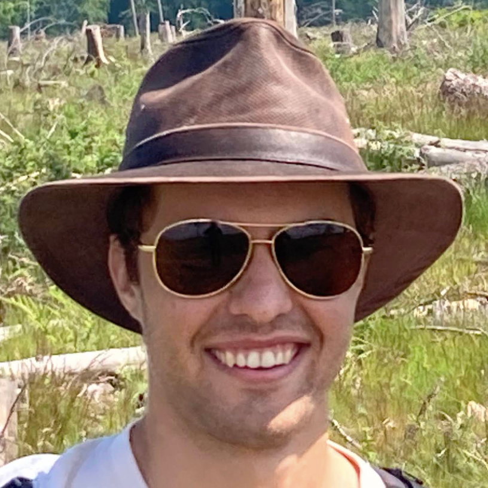
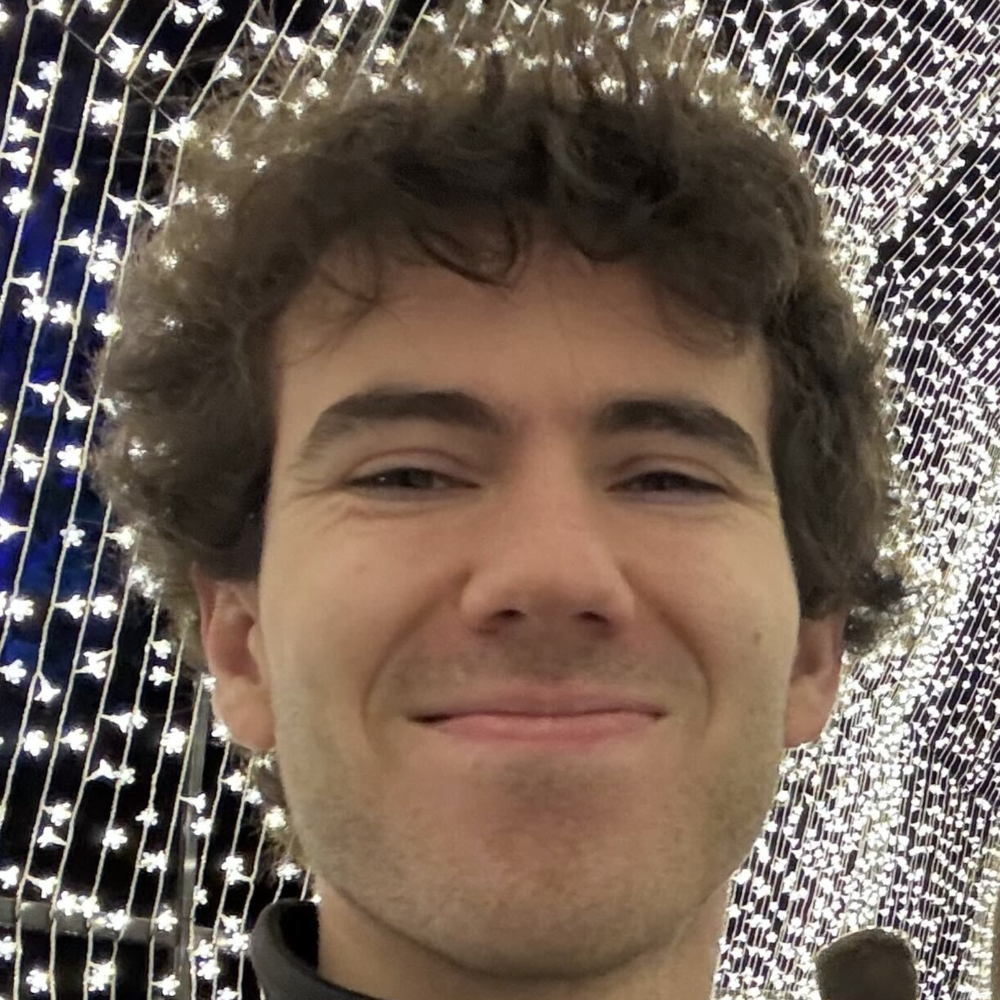

Understanding deep learning will be the intellectual challenge of the early 21st century, much like understanding quantum mechanics in the early 20th. Progress is being made: pieces of a scientific theory of deep learning are starting to be uncovered and fit together. It’s a slow process, and one aided by coordination among different groups, so we’ve made this website as a hub to organize and share progress.
Why a science of deep learning? As it matures, this emerging science will become practically impactful in the training and usage of large models, and also (we anticipate) a central tool for AI safety and alignment. Plus it’s really fascinating: it has deep connections to our own learning. See the learning mechanics perspective paper for a fuller argument and a description of the emerging science.
If you want to write an article for Learning Mechanics, please reach out to the editors.
Editors
Team

